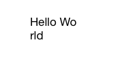
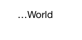
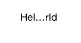
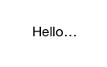

UILabel的LineBreak方式总结
UILabel这个东西挺好用的，有很多可以调的设置，显示纯文字相当合适。它的诸多设置中有一项LineBreak，用来设置当文字长度超过UILabel宽度时的显示方式，当显示的内容是动态的，而且内容有可能很长的时候，为了得到较好地显示效果，这项设置毫无疑问是我们必须考虑的。
LineBreak方式总共有下面六种：
1.NSLineBreakByWordWrapping
这个主要是UILabel本身设置行数的大于1，并且换行的时候，有点像是CSS里的word-break的意思。这个主要针对英语这类语言，单词比较长，如果一个单词换行的时候被折成两个会显得不好看，使用这个设置就能避免这种现象。
上面这个lineNumber 设置为2，设置为1是不会换行的。设置为0也可以，代表没有行数限制。
2.NSLineBreakByCharWrapping
和WordWrapping类似都是用于多行显示的，这个是直接在字母的地方砍掉，出来的效果就是这样的：

3.NSLineBreakByClipping
从这个开始往下的几个，都是用于单行显示的。这个是最简单粗暴的方式，超过长度并且不是多行，直接把多出的部分砍掉
4.NSLineBreakByTruncatingHead
这个和下面两个类似，都是用省略号来代替多出的内容，直接上图了，不解释

5.NSLineBreakByTruncatingMiddle

6.NSLineBreakByTruncatingTail
UILabel的默认设置是这一个。

还有一点需要注意，如果是单行的话，LineBreak和adjustsFontSizeToFitWidth以及adjustsLetterSpacingToFitWidth（iOS7废弃）是不能同时设置的，根据文档，在iOS6之前，同时设置会报错，现在同时设置的话，LineBreak不会起作用。